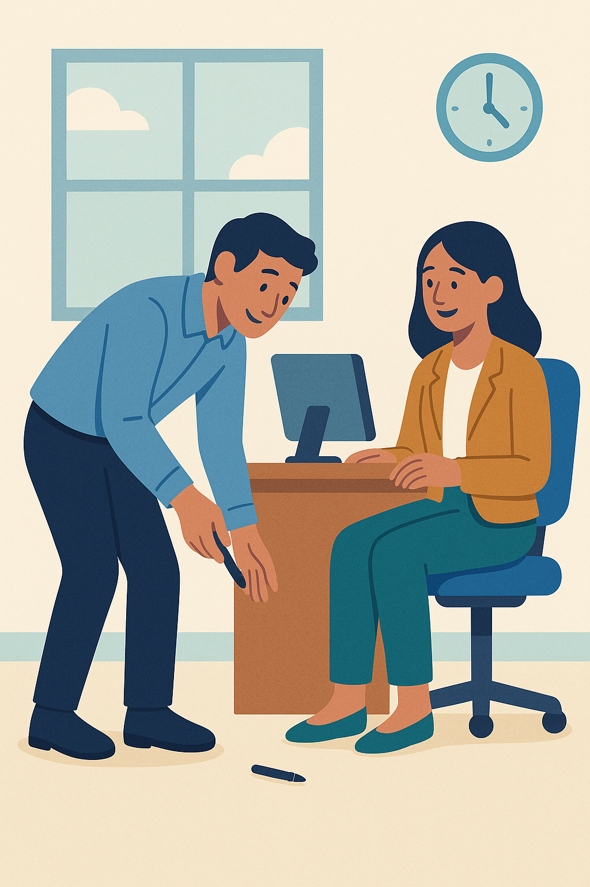
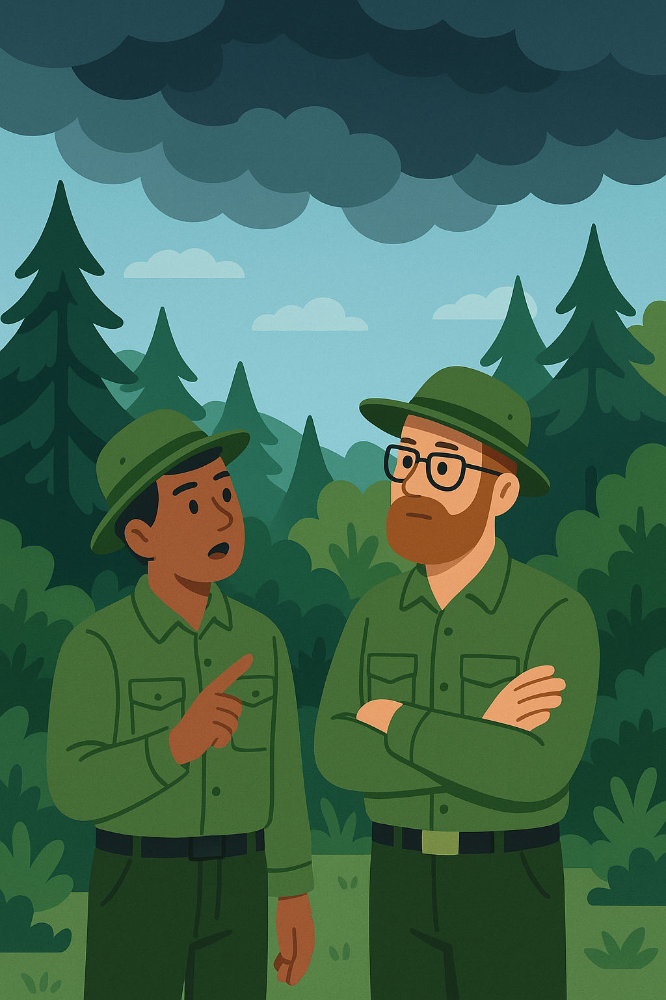

Talking about the Future: Will, Going to, and Present Continuous
Introduction
When talking about the future in English, you choose different forms based on what you want to express—whether it’s a quick decision, a plan, or something already set. The forms will, going to, and present continuous help you share your thoughts about the future in a way that feels natural and clear. This section explains how to use these forms in workplace situations, so you can communicate with confidence.
🎧 Complementary Audio – Guided Explanation
This audio supports you as you go through the lesson. Listen to it for a step-by-step explanation with spoken examples. It’s especially helpful if you prefer learning by listening or want to review while doing other tasks.
1. Will: Quick Decisions and Personal Thoughts
Use will when:
- Quick decisions (you decide right now):
Example: “Oh, you dropped your pen! I’ll get it for you.”
Example: “I’m tired. I think I’ll go to bed.” - Guesses about the future (what you think or believe):
Example: “I think it’ll rain tomorrow.”
Example: “He will probably be late.”
Why it works: Will shows that you’re thinking about the future in the moment. It’s like picturing something new in your mind, either a decision you just made or an idea about what might happen, without needing proof.
2. Going to: Plans and Things You See Coming
Use going to when:
- Plans you already made (you decided earlier):
Example: “I’m going to start a new course next week.”
Example: “We’re going to visit our grandmother this weekend.” - Guesses based on clues (you see or know something now):
Example: “Look at those dark clouds — it’s going to rain.”
Example: “Watch out! You’re going to fall!”
Why it works: Going to connects the future to what’s happening now. It’s like looking at a path you’re already on—either a plan you’ve set or something you can see is about to happen because of clear signs.
3. Present Continuous: Fixed Plans
 Use present continuous when:
Use present continuous when:
- Definite plans (arrangements already set, often with others):
Example: “I’m meeting Sarah at 3 p.m.”
Example: “We’re flying to Paris on Monday.”
Why it works: Present continuous makes the future feel like it’s already happening. It’s as if the plan is so certain—like it’s written in your calendar—that it feels real and fixed right now.
Summary Table
| Form | Use for… | Example |
|---|---|---|
| will | 💬 Quick decision 💭 Guess (based on thoughts) |
“I’ll answer the phone.” “She’ll love this film.” |
| going to | 📅 Plan 🔍 Guess (based on clues) |
“I’m going to join the gym.” “It’s going to snow – look at the sky!” |
| present continuous | 📆 Definite plan | “We’re having dinner with them tomorrow.” |
Common Mistakes to Avoid
- Incorrect: “I think it’s going to rain tomorrow.” (Just a thought, no clues)
Correct: “I think it will rain tomorrow.” - Incorrect: “I’ll visit grandma this weekend.” (If you planned it already)
Correct: “I’m going to visit grandma this weekend.”
Why these mistakes happen: Choosing the wrong form can mix up how you picture the future. Use will for thoughts or instant decisions, going to for plans or clear signs, and present continuous for set arrangements to match what you mean.